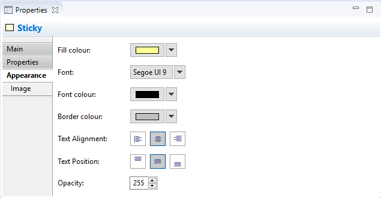
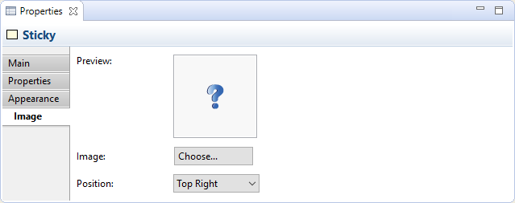

A Sticky object can contain text and an icon. You can lock the Sticky if you want to make it read-only. There are a number of ready-coloured Stickies available in the Palette, but you can always change the colour in the Properties window.
Properties
Selecting a Sticky in a Canvas View means that you can edit or view the following properties in the Properties window.
The Main Tab

Main Properties for a Canvas Sticky
| Locked: | Selecting this ensures that the Sticky cannot be moved or edited. |
| Content: | A space to enter some text content for the Sticky. The text will show up in the Sticky. |
| Notes: | A space to enter some text notes for the Sticky. Any notes will appear in the tooltip for the Sticky. |
The Properties Tab
For more information about creating and managing User Properties see User Properties.
The Appearance Tab
Appearance Properties for a Canvas Sticky
| Fill Colour: | Sets the fill colour for the selected object. Click on the main part of the button to set the colour. The "Default" drop-down option sets the fill colour to the default setting. |
| Fill Opacity: | Set the fill opacity of the figure. Range from 0-255. |
| Border Colour: | Sets the colour of the border used for the selected object. Click on the main part of the button to set the colour. The "None" drop-down option removes the border from the object. |
| Line Opacity: | Set the line opacity of the figure. Range from 0-255. |
| Text Alignment: | Align text in the selected object to Left, Centred or Right. |
| Text Position: | Align text in the selected object to Top, Middle or Bottom. |
| Font: | Sets the font used for the text in the selected object. Click on the main part of the button to set the font. The "Default" drop-down option sets the font to the default setting as set in Preferences. |
| Font Colour: | Sets the colour of the font used for the text in the selected object. Click on the main part of the button to set the colour. The "Default" drop-down option sets the font colour to the default setting. |
The Image Tab
Image Properties for a Canvas Sticky
| Preview: | A preview image that shows how the image will appear. Canvas Sticky images are resized to a maximum width and height of 100 pixels. Double-clicking the Preview box will launch the Image Chooser dialog window. You can also drag and drop an image file from the desktop onto the Preview box. |
| Image: | Select an image for the object or clear the image. See "Adding Images to Objects" for more details |
| Position: | Sets the position of the image relative to the object. |